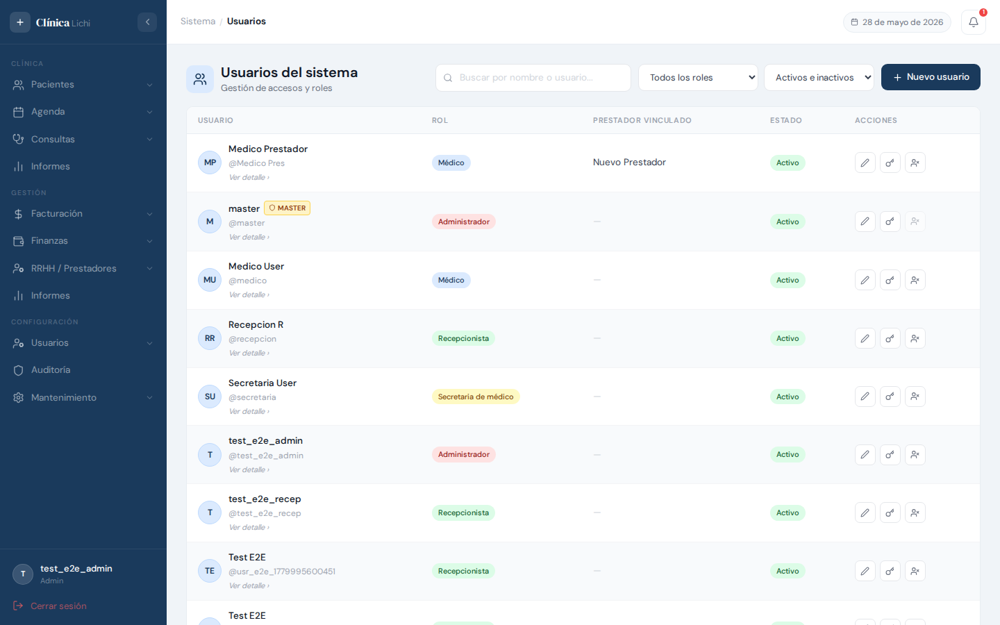
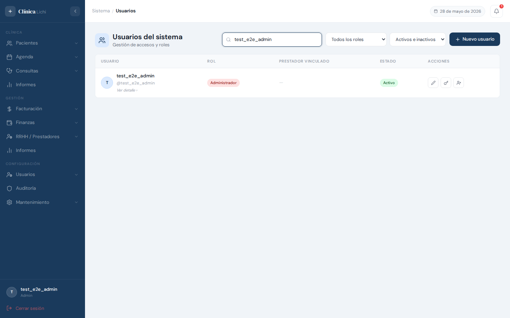
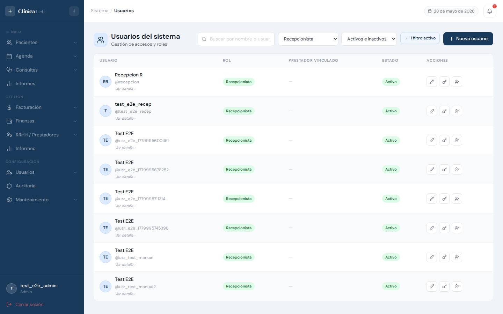
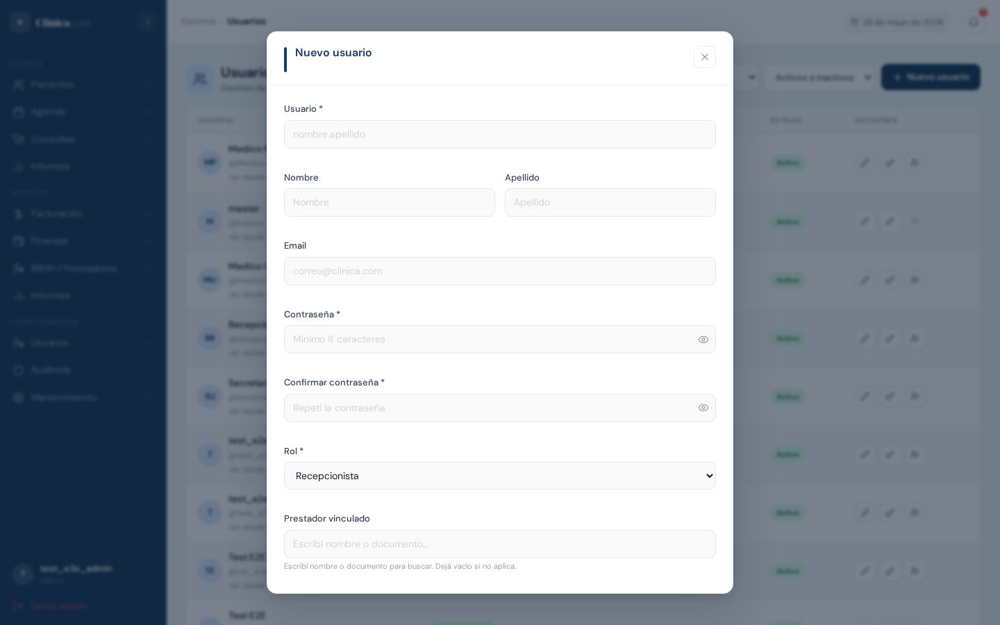
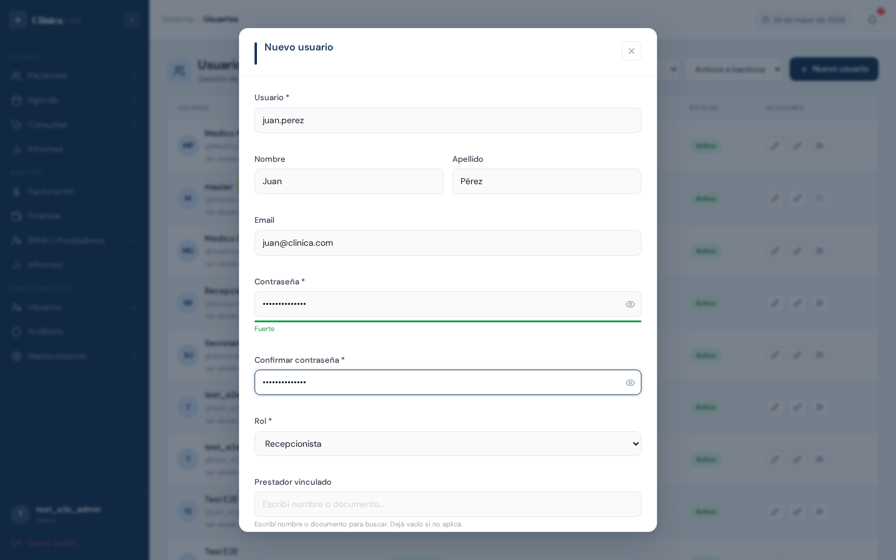
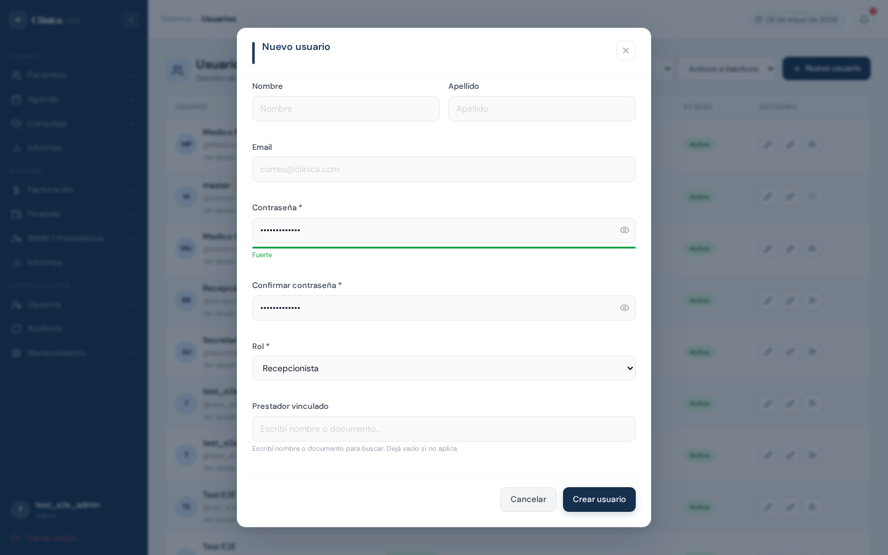
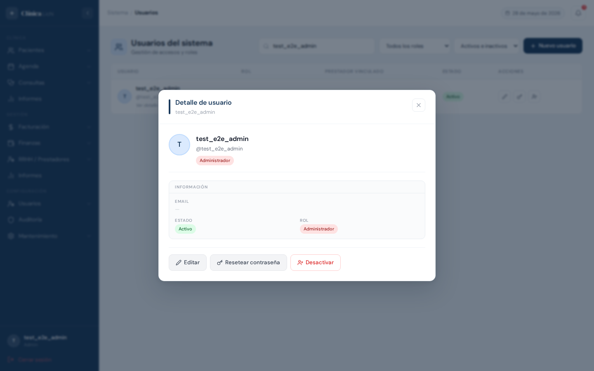
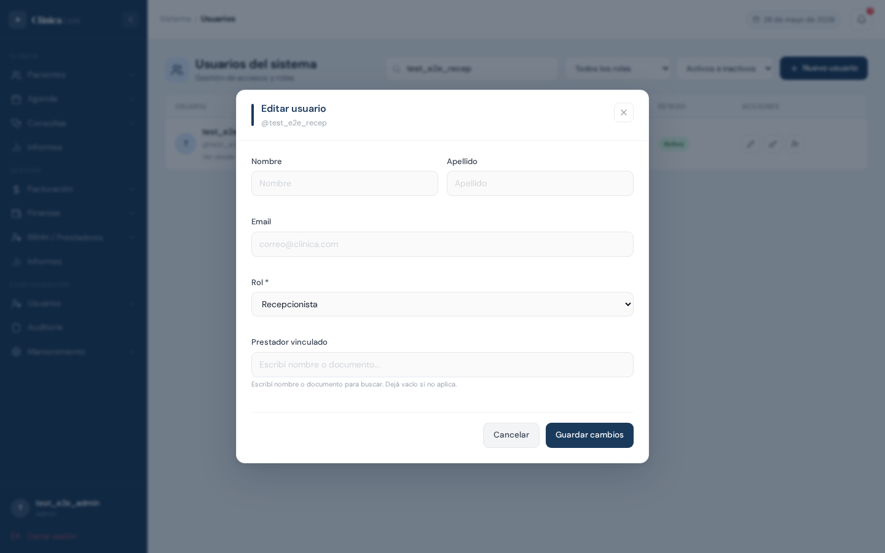
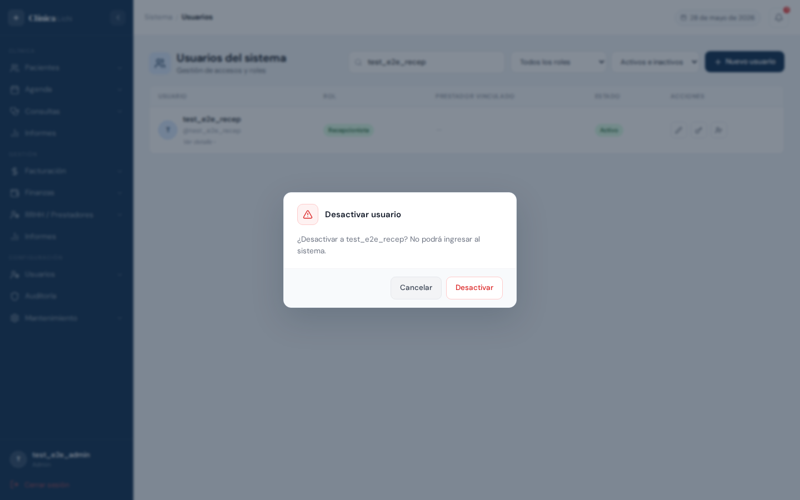
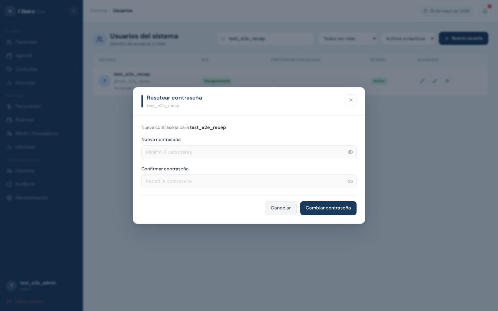

Descripción del módulo
El módulo Usuarios del sistema permite al administrador gestionar todas las cuentas de acceso de la clínica: crear nuevos usuarios, asignarles roles, vincularlos a prestadores de salud (cuando corresponde), y controlar si pueden ingresar al sistema.
Cada usuario del sistema tiene asociado un Perfil con su rol y, opcionalmente, un vínculo a un prestador de la clínica. El rol determina a qué partes del sistema tiene acceso.
Acceder al módulo
En el menú lateral izquierdo, bajo la sección Configuración, hacé clic en Usuarios.
Pantalla principal — listado de usuarios
Al ingresar al módulo se muestra la lista completa de usuarios registrados en el sistema.

Columnas de la tabla
| Columna | Descripción |
|---|---|
| Usuario |
Muestra el nombre completo del usuario (si tiene) o su nombre de usuario. Debajo aparece
el @username y el texto "Ver detalle›" que indica que la fila es clickeable.
|
| Rol | Badge de color que indica el rol asignado: Administrador, Médico, Recepcionista, Secretaria de médico. |
| Prestador vinculado | Nombre del prestador de salud asociado a la cuenta, cuando corresponde. Muestra "—" si no tiene. |
| Estado | Activo puede ingresar al sistema. Inactivo tiene acceso bloqueado. |
| Acciones |
Tres botones de acción rápida (aparecen al pasar el cursor sobre la fila): Editar — abre el formulario de edición
Resetear contraseña — asigna nueva contraseña al usuario
Activar / Desactivar — cambia el estado del usuario
|
Buscar y filtrar usuarios
La barra de herramientas superior incluye tres controles de búsqueda y filtrado que actúan en tiempo real sobre la tabla.

| Control | Descripción |
|---|---|
| Campo de búsqueda "Buscar por nombre o usuario…" |
Filtra por nombre completo o @username. La búsqueda tiene un
retardo de 300 ms para no hacer peticiones en cada tecla. Borrá el texto para
volver a ver todos los usuarios.
|
| Todos los roles | Desplegable para filtrar por un rol específico: Administrador, Médico, Recepcionista o Secretaria de médico. |
| Activos e inactivos | Permite ver solo usuarios Activos, solo Inactivos, o ambos al mismo tiempo (valor por defecto). |

Crear un usuario nuevo
Hacé clic en el botón + Nuevo usuario en la esquina superior derecha. Se abrirá el formulario de creación.

Pasos para crear un usuario
- En el campo Usuario * ingresá el nombre de usuario en formato
nombre.apellido(sin mayúsculas ni espacios). Este campo no se puede cambiar después. - Completá Nombre y Apellido (opcionales, pero ayudan a identificar al usuario en la tabla).
- Ingresá el Email del usuario si corresponde (opcional).
- Escribí una Contraseña de al menos 8 caracteres. El indicador de fuerza muestra si es débil, media o fuerte.
- Repetí la contraseña en Confirmar contraseña. Si no coinciden, se muestra una advertencia en rojo debajo del campo.
- Seleccioná el Rol que tendrá el usuario (por defecto: Recepcionista). Ver sección 11 para los permisos de cada rol.
- Opcionalmente, vinculá al usuario con un Prestador: escribí el nombre o documento en el buscador. Dejalo vacío si no aplica.
- Hacé clic en Crear usuario. El modal se cierra y el usuario aparece en la lista.

- Solo letras minúsculas, números, puntos y guiones bajos.
- Sin espacios ni mayúsculas (se convierten automáticamente a minúsculas).
- Debe ser único — no puede repetirse en el sistema.
- No se puede cambiar una vez creado.
Errores posibles al crear

| Error | Causa | Solución |
|---|---|---|
| "Ya existe un usuario con ese nombre de usuario" | El @username ingresado ya está registrado. |
Usá un nombre de usuario diferente (ej: agregá un número o iniciales adicionales). |
| "El nombre de usuario no puede contener espacios" | Se ingresó un espacio en el campo usuario. | Reemplazá el espacio por un punto o guión bajo. Ej: maria.garcia |
| "La contraseña debe tener al menos 8 caracteres" | La contraseña es demasiado corta. | Ingresá una contraseña de 8 caracteres o más. |
| "Las contraseñas no coinciden" | El campo Contraseña y Confirmar contraseña tienen valores distintos. | Volvé a escribir la misma contraseña en ambos campos. |
Ver detalle de un usuario
Hacé clic en cualquier parte de una fila de la tabla (excepto en los botones de acciones) para abrir el panel de detalle del usuario.

El detalle muestra:
- Avatar con las iniciales del nombre
- Nombre completo y
@username - Badge de rol
- Email registrado
- Estado (Activo / Inactivo) y Rol en formato expandido
- Prestador vinculado y médicos asignados (cuando aplica al rol)
Desde el panel de detalle podés ejecutar tres acciones:
Editar un usuario
Podés abrir el formulario de edición desde el botón ✏️ en la fila de la tabla, o desde el botón Editar en el panel de detalle.

Al editar, el campo Usuario (@username) no aparece ya que no es modificable.
Se pueden cambiar:
| Campo | Editable | Notas |
|---|---|---|
| Nombre y Apellido | Sí | Actualiza el nombre completo visible en la tabla. |
| Sí | Opcional. | |
| Rol | Sí * | * El rol del usuario master no puede cambiarse. |
| Prestador vinculado | Sí | Buscador por nombre o documento. Dejar vacío para desvincular. |
| Médicos asignados | Sí | Solo aparece si el rol es Secretaria de médico. Permite asignar múltiples médicos. |
| Contraseña | No | Para cambiar la contraseña usá la opción "Resetear contraseña". |
- Modificá los campos necesarios.
- Hacé clic en Guardar cambios. El modal se cierra y la tabla se actualiza.
- Para cancelar sin guardar, hacé clic en Cancelar o en la X del modal.
Activar / desactivar un usuario
Desactivar un usuario le impide iniciar sesión sin eliminar su cuenta ni su historial. Es útil cuando un empleado se va temporalmente o deja la clínica.
Desde la tabla
Pasá el cursor sobre la fila del usuario y hacé clic en el botón (cambiar estado).
Desde el detalle
Abrí el detalle del usuario (clic en la fila) y hacé clic en el botón Desactivar (o Activar, según el estado actual).
En ambos casos, el sistema pide confirmación antes de ejecutar el cambio:

- El usuario master (superusuario) no puede desactivarse.
- No podés desactivar tu propia cuenta (la que está actualmente conectada).
Resetear contraseña (acción del administrador)
Cuando un usuario olvidó su contraseña o es necesario cambiarla por seguridad, el administrador puede asignarle una nueva sin necesidad de conocer la contraseña actual.
Pasos
- Ubicá el usuario en la tabla (podés usar la búsqueda).
- Hacé clic en el botón de la fila, o abrí el detalle y presioná Resetear contraseña.
- En el modal, ingresá la Nueva contraseña (mínimo 8 caracteres).
- Repetí la contraseña en Confirmar contraseña.
- Hacé clic en Cambiar contraseña.

Cambiar la propia contraseña
Cualquier usuario puede cambiar su propia contraseña desde el menú de perfil, ubicado en la parte inferior del menú lateral izquierdo.
Pasos
- En el sidebar, hacé clic sobre tu nombre de usuario (esquina inferior izquierda).
- En el menú desplegable, seleccioná Cambiar contraseña.
- Ingresá tu contraseña actual.
- Ingresá y confirmá la nueva contraseña.
- Hacé clic en Cambiar contraseña.
Roles del sistema
El rol define a qué módulos y acciones tiene acceso el usuario al ingresar al sistema.
| Rol | Acceso principal | Restricciones |
|---|---|---|
| Administrador | Acceso completo a todos los módulos: pacientes, agenda, consultas, facturación, finanzas, RRHH, informes, usuarios, mantenimiento y auditoría. | Sin restricciones. Pantalla de inicio: Dashboard de prestadores. |
| Recepcionista | Pacientes, agenda, consultas, facturación, finanzas, mantenimiento e informes. | No puede acceder a Usuarios, Auditoría ni RRHH. No puede eliminar registros. |
| Médico | Pacientes (solo lectura), agenda del día, consultas propias. | Solo ve la agenda y consultas de su propia agenda. Acceso muy limitado. Pantalla de inicio: Consultas. |
| Secretaria de médico | Pacientes, agenda, consultas de los médicos asignados. | Solo gestiona la agenda de los médicos indicados en "Médicos asignados". Pantalla de inicio: Consultas. |
Mensajes de error frecuentes
| Mensaje | Situación | Qué hacer |
|---|---|---|
| "Ya existe un usuario con ese nombre de usuario" | Al crear un usuario, el @username ya está en uso. |
Elegí un nombre de usuario diferente. |
| "El nombre de usuario no puede contener espacios" | Se ingresó un espacio en el campo Usuario. | Usá punto o guión_bajo en lugar de espacio. |
| "Las contraseñas no coinciden" | Los campos Contraseña y Confirmar contraseña tienen valores distintos. | Volvé a escribir ambas contraseñas asegurándote que sean idénticas. |
| "La contraseña debe tener al menos 8 caracteres" | La contraseña es demasiado corta. | Usá 8 caracteres o más. Recomendación: combinar letras, números y símbolos. |
| "La nueva contraseña no puede ser igual a la actual" | Al resetear o cambiar contraseña, se ingresó la misma que ya tenía. | Ingresá una contraseña distinta a la actual. |
| "No se puede desactivar al usuario master" | Se intenta desactivar al superusuario del sistema. | El usuario master no puede desactivarse por diseño de seguridad. |
| "No podés desactivar tu propia cuenta" | El administrador intenta desactivar su propia sesión activa. | Pedile a otro administrador que realice la acción, o creá otro usuario admin primero. |
| "Credenciales incorrectas" | En el login, usuario o contraseña incorrectos. | Verificá el nombre de usuario (todo en minúsculas) y la contraseña. Si no recordás la contraseña, pedile al administrador que la resetee. |
| "Usuario desactivado. Contacte al administrador" | En el login, el usuario existe pero está inactivo. | Contactá al administrador para que reactive la cuenta. |